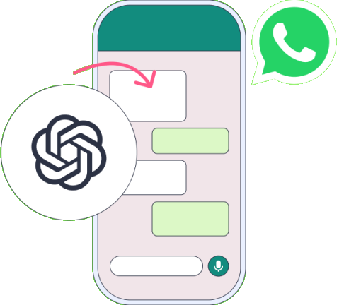

Atiende 24/7 en WhatsApp con tu propia IA
Automatiza la atención al cliente con una IA entrenada exclusivamente con tu documentación. Respuestas precisas, tono de marca y datos alojados en la UE.
* Vista preliminar con fines demostrativos. El diseño y funcionalidades del panel final pueden variar.

Beneficios que hacen crecer tu negocio
Una solución integral que transforma la manera en que interactúas con tus clientes en WhatsApp
IA entrenada con tu documentación
No es un bot genérico: cargamos tu catálogo, políticas y FAQs para que responda como si fuera tu mejor agente humano.
Acompañamiento experto
Monitorizamos el uso, afinamos respuestas y resolvemos incidencias. Tú sólo disfrutas del resultado.
Consumo sin sorpresas
Alertas automáticas de uso y transparencia de costes para que tu presupuesto esté siempre bajo control.
Seguridad y privacidad
Datos alojados en la UE con cifrado de nivel bancario. Cumplimiento total del RGPD.
Respuesta instantánea
Tu IA responde en segundos, cualquier día del año. Mejora la experiencia del cliente sin esfuerzo.
Análisis detallado
Métricas completas de conversaciones, satisfacción y oportunidades de mejora en tiempo real.
¿Por qué Nodra es tu mejor opción?
Comparamos nuestra solución con las alternativas genéricas del mercado
| Característica | Nuestra Oferta Nodra | Bot Genérico |
|---|---|---|
| IA GPT-4o Personalizada | ✓ Incluida y adaptada | ✗ FAQ predeterminado |
| Entrenamiento con documentos propios | ✓ PDFs, catálogos, manuales | ✗ No disponible |
| Panel de control profesional | ✓ WhatsApp NextBoard incluido | ✗ Sin panel de gestión |
| Configuración a medida | ✓ Tono, personalidad, flujos | ✗ Plantillas básicas |
| Soporte y acompañamiento | ✓ Equipo dedicado | Solo email / Autoservicio |
| Datos en la UE (RGPD) | ✓ Cumple normativas | Ubicación desconocida |
| Alertas de consumo | ✓ Control total | ✗ Costes ocultos |
WhatsApp NextBoard
Tu centro de control inteligente para gestionar todas las conversaciones de WhatsApp desde una interfaz profesional y potente.
Historial Completo
Accede a todas las conversaciones entre tu asistente IA y los clientes. Búsqueda avanzada por fecha, cliente o tema.
Filtros Inteligentes
Encuentra conversaciones específicas con filtros por estado, tipo de consulta, satisfacción del cliente y más.
Métricas en Tiempo Real
Dashboard con KPIs clave: volumen de conversaciones, tasa de resolución, tiempo de respuesta y satisfacción.
Oportunidades de Mejora
Identifica patrones y áreas de optimización basadas en el análisis automático de las interacciones.
Incluido con tu asistente de WhatsApp - Sin coste adicional
Acceder al Demo del PanelPuesta en marcha en 3 pasos
Un proceso sencillo y guiado para tener tu asistente funcionando en menos de una semana
Reúne tu documentación
Envíanos tu catálogo, políticas y cualquier material relevante. Cuanta mejor información, mejor será la IA.
Entrenamiento y pruebas
Nuestro equipo entrena el modelo, diseña los flujos y valida la calidad contigo en menos de 7 días.
Despliegue y optimización
Conectamos tu número oficial y monitorizamos métricas en tiempo real para afinar respuestas continuamente.
Gestionar 3.000 consultas al mes te costará en torno a 0,11 € por interacción
Ahorra tiempo y libera a tu equipo para tareas de mayor valor añadido
¿Listo para revolucionar tu atención al cliente?
Solicita una demo personalizada y descubre cómo tu empresa puede transformar la atención al cliente con inteligencia artificial en WhatsApp.
Solicitar Demo Gratuita